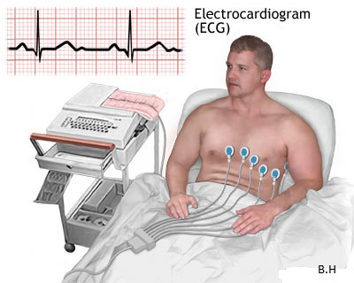
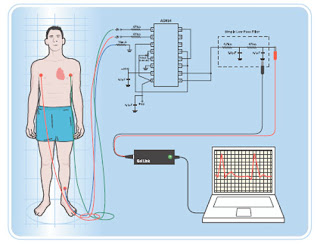
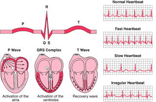
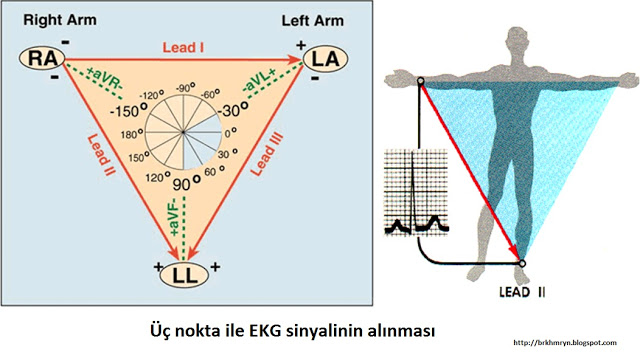
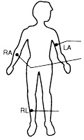
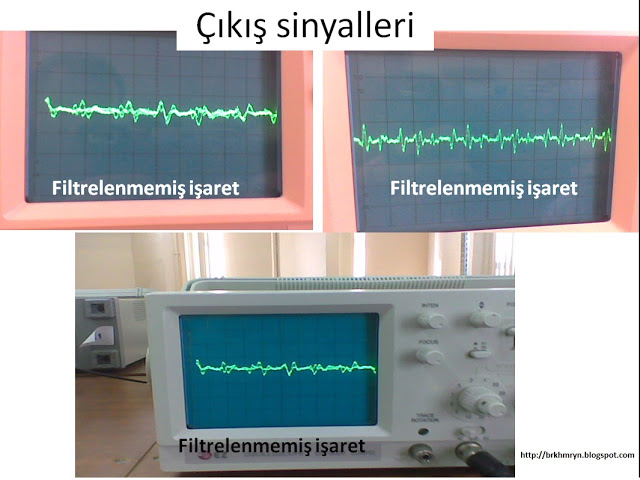
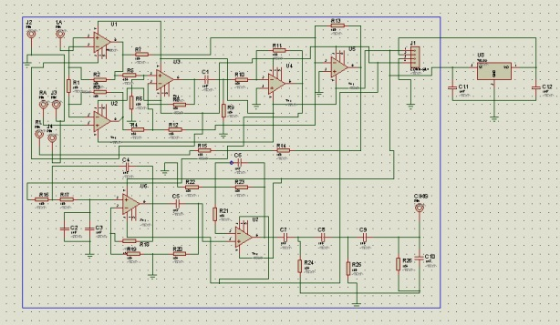
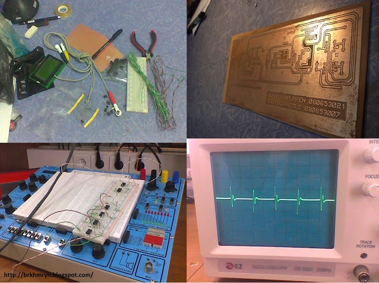

EKG (Electrocardiograph)

Elektronik, her alanda olduğu gibi tıp alanında da bir çok buluşun anahtarı durumunda. Tanı
ve tedavi sürecinde elektronik tıp cihazları doktorların eli kolu vazifesinde. Görüntüleme sistemleri,
operasyon robotları, analiz cihazları ve daha bir çok türde elektronik düzenek, tıbbın hizmetinde. Bu
durum
elektroniği tıp için olmazsa olmaz haline getiriyor. Buna bağlı olarak da tıp bilimi, elektronik için
geniş
bir çalışma alanı, elektronik piyasası içinse güzel bir pazar konumunda. Bu yazımda sizlere geçen yıl
uygulaması yaptığımız EKG'den bahsedeceğim.
EKG nedir?
Cilde yapıştırılan elektrotlar aracılığı ile grafik olarak kalbin elektriksel aktivitesini (kalbin ritmini, frekansını, kalp atışlarının ritmini, yayılmasını ve reaksiyonun tekrar yok olması) gözlemleyen dalga formudur. Bu işareti incelememizi sağlayan cihazada EKG cihazı denir. Tıpta oldukça kıtymetli bir yeri vardır. 

Nasıl Çalışır?
Kalbin çalışması incelemek üzere geliştirilen bu cihaz temelde kalbin kasılma ve gevşeme anında meydana gelen seslerin uyarlanması ile çalışırlar. Yapıştırılan elektrotlarda bulunan mikrofonlar sayesinde alınan ses işaretlerinin, elektriksel işaretlere dönüştürülüp, gözlenmesi esasına dayanır.EKG İşaretinin Alınması
Kalp kasılıp ve gevşerken çok düşük genlikli elektriksel ve ses sinyalleri üretirler. EKG cihazı tasarlarken biz bu sinyalleri güçlendirip bir monitöre veya gözlemleyebileceğimiz bir ortama aktarırız. EKG grafiği elde etmenin birçok yöntemi var. Biz bunlardan üç derivasyonlu olanı kullandık.


İki kol ve bir ayaktan alınan ölçümlerde, iki kol arasındaki farkı alıp, ayaktaki referans noktası ile
karşılaştırıp EKG sinyali elde ediyoruz. Kollar ve bir bacağa bağlanan, ucunda elektrodlar bulunan
koaksiyel kablolar ile işaret kuvvetlendiriciye taşınır.
Fark alma işlemini enstrümantasyon kuvvetlendiricisi ile gerçekleştirdik. Piyasada bulunan birçok proje
ve kitapta ilk katman olan fark işlemini AD624 entegresi ile yapmışlar fakat bu entegreyi Türkiyede
bulmak çok zor olabilir, bunun yerine kendi enstrümantasyon kuvvetlendiricimizi tasarladık
.Enstrümantasyon kuvvetlendiricisi tasarlamak düşünüldüğü kadar zor bir olay değildir. Birkaç
Operational amplifier, birkaç direnç ile gerçekleştirebileceğimiz bir katmandır(en basit şekliyle).

Farkı alınmış ve güçlendirilmiş sinyalimizi inceleyecek olursak üst üste binmiş birçok sinyalden oluştuğunu
göreceğiz. Bizim için önemli olan EKG sinyalini elde etmek için diğer sinyallerden kurtulmalıyız. Diğer
sinyalleri elemek için bir Band-pass filter tasarladık. Band-pass filter merkez frekansı, bizim EKG
işaretimizin frekansında olmalıdır yoksa EKG işaretimizide filtrelemiş oluruz.

Bu işlemleri yaptıktan sonra çıktı alırsak eğer bir sürpriz ile karşılaşacağız. EKG sinyalimizin 50Hz olan şebeke frekansı üstüne bindiğini göreceğiz. Bu durumu ortadan kaldırmak için bir NOÇ süzgeç kullandık. NOÇ süzgeç aslında bir band söndüren, 50HZ freknasını bastırarak diğer bütün frekansları geçiren bir filtredir. NOÇ süzgecimizi çok iyi ayarlamalıyız, kesim noktalarını uzatmamalıyız. Aksi taktirde EKG sinyalimizin de bastırılmasına sebep olabiliriz.
EKG sinyalimizi alacağımız süzüp ve kuvvetlendirecek şekilde tasarladığımız devrenin isis çiziminin ekran görüntüsünü sizlerle paylaşıyorum.

Çalışmalaramızda aldığımız birkaç çıktı ile çalışma ortamımızın gösellerini aşşağıda sizlerle paylaşmak
istedim :)

- Resim EKG yapında kullanılacak malzemeler. Görüldüğü gibi bir avuç malzemeden başka birşey değil :)
- Resim EKG cihazımızın baskı devresi
- Resim Devremizin board üzerindeki ilk test sürüşü :)
- Resim ve Sonuç. Çıkış işaretimiz resimde görüldüğü gibi.

Çalışma ortamımız.
Son olarakta EKG sinyalimizi güçlendirip osiloskop ekranında çıkış aldık. Osiloskop yerine grafik ekran
tercih edecek olursak sinyalimzi AD converterdan geçirmemiz gerekir. Bu işlem için bir kaç satır kod yazmak
ve pic16F877 kullanmak yeterli olacaktır. Bu çalışma profesyonel olarak yapılmamışsa da gerçek sinyale çok
yakın bir sinyal elde etmiş olduk. Profesyonel EKG cihazlarındaki işleyiş temel olarak yukarıdaki gibidir
fakat daha kompleks ve güçlü katmanlardan oluştuğu için daha kesin sonuçlar elde edilir.
EKG cihazımızın doğruluğunun ölçülmesi